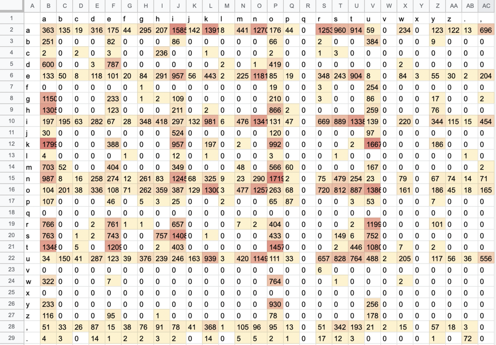
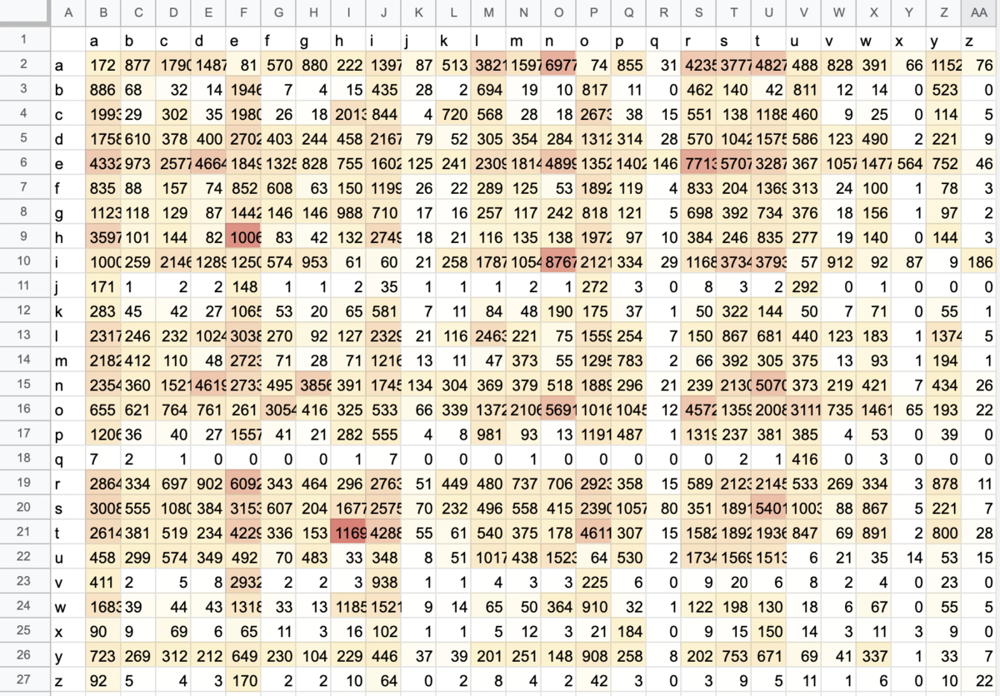

投稿日: 2023/01/20 18:33:54
カテゴリ: N-gram
サムネイル: 
かなや英語の文字別N-gramについてはすぐ見つかるものの、日本語のローマ字タイピング向けのN-gramはなかなかなかったので、作ってみた。
これがN-gram (1,2,3-gram) を収録したタブ区切り表 (TSV) ファイル。
romaji letter N-gram (1,2,3 -grams) - GitHub Gist
（集計に使ったスクリプト群: https://github.com/funatsufumiya/ngram_and_scraper）
【1/21 追記】1-gram (unigram) が抜けていたので追加。
2-gramをもとに作成。1文字目が左、2文字目が上。
https://gist.github.com/funatsufumiya/f84f2a47ffb61deef43151303ff0f507#file-table_romaji_2gram-tsv
比較のために、英語の2-gramの対応表も貼っておく。(元データは http://practicalcryptography.com/cryptanalysis/letter-frequencies-various-languages/english-letter-frequencies/ の english_bigrams_1.txt)

https://gist.github.com/funatsufumiya/f84f2a47ffb61deef43151303ff0f507#file-table_en_2gram-tsv
元になる文章や、集計量によっても変わってくるので、今回は約10万文字 (ローマ字・半角換算)、Web小説やWikipedia、ニュース記事、対談記事などを中心にスクレイピングし、ウェブサイトのヘッダ・フッタ部分は手動で除去した。
ローマ字化にあたって、漢字仮名交じり文を pykakasi を使って一旦ヘボン式にした上で、chi、shi、tsu はそれぞれ ti、si、tu に置換。
全角 → 半角は mojimoji を使ったが、記号の半角化と空白文字の整理を手作業にて行ったので、記号については参考程度。
したがって、ローマ字のみの頻度表ではなく、一部英語も含むことに注意。
上位150をこちらにも載せてみる。1列目は対象文字で、2列目は登場回数。
a 11426
o 10062
i 9595
u 8581
n 6963
k 6192
t 5982
e 5784
s 5024
r 3917
h 2848
m 2360
, 2217
d 1827
g 1820
y 1430
1320
w 1100
b 887
j 774
z 472
[ 451
] 451
p 420
f 289
c 261
. 249
1 201
0 149
( 147
) 147
2 128
5 101
! 83
3 77
? 73
9 58
4 58
8 57
6 53
> 43
7 42
l 41
< 39
+ 27
- 26
\n 22
: 21
17
… 15
= 14
― 14
" 14
→ 13
/ 11
v 10
# 10
· 9
~ 9
↑ 7
▲ 5
↓ 5
% 5
℃ 4
° 4
〜 4
x 4
⇨ 3
○ 3
& 3
＂ 2
〟 2
〝 2
■ 2
q 2
“ 2
ö 1
♪ 1
– 1
乐 1
〇 1
https://gist.github.com/funatsufumiya/f84f2a47ffb61deef43151303ff0f507#file-romaji_1gram-tsv
ka 1799 no 1719 ku 1667 ai 1585 to 1457 si 1408 ak 1391 ou 1386 ta 1348 in 1341 it 1338 ha 1305 ok 1300 an 1270 on 1257 ar 1253 ni 1245 te 1209 ru 1199 en 1181 ga 1150 un 1149 tu 1080 ko 992 na 987 ik 981 as 960 ei 957 ki 957 uk 939 yo 930 at 914 et 904 is 889 ot 887 ho 866 us 828 os 812 de 787 ra 766 ut 764 wo 764 sa 763 re 761 sh 757 su 752 se 743 or 720 ma 703 a, 696 ir 669 ur 657 ri 657 da 600 mo 566 u, 556 ji 524 uu 488 ns 479 om 477 im 476 i, 454 tt 446 ek 443 am 441 so 433 um 420 do 419 ih 418 me 404 ro 404 ti 403 ke 388 oi 387 bu 384 ug 376 ,k 368 aa 363 oh 359 mi 349 er 348 ig 348 iy 344 ,s 342 od 336 nk 325 wa 322 ad 316 ii 297 ag 295 eh 291 nn 290 ud 287 u 282 id 282 ne 274 oo 263 og 262 ng 261 hu 259 nd 258 yu 256 fu 254 nt 254 ba 251 ui 246 es 243 uh 239 ch 236 aw 234 ge 233 ya 233 a 226 em 225 iw 220 hi 211 go 210 ah 207 uw 205 e, 204 ob 201 kk 197 ia 197 ib 195 ,t 193 oy 186 ky 186 zu 178 i 176 ao 176 ae 175 mu 167 o, 165 uj 163 ow 161 ub 150 ss 149 aj 142 ,[ 140 iu 139 ab 135 ea 133 n 133 ij 132 io 131 oj 129 o 127 s 124 ay 123 he 123
https://gist.github.com/funatsufumiya/f84f2a47ffb61deef43151303ff0f507#file-romaji_2gram-tsv
aku 646 you 520 oku 517 sho 466 hou 437 ika 430 ono 428 ite 423 sit 421 kan 411 ita 386 oto 377 uno 370 tei 352 ara 352 uka 351 are 330 ino 323 uni 319 iru 312 etu 309 aka 307 iha 305 osi 300 tai 296 asi 294 kar 284 kin 284 aru 283 ina 282 uto 279 ini 279 oka 277 sei 277 ore 276 ru, 273 gak 270 isi 265 ete 260 oko 259 iyo 255 eki 253 uru 252 usi 252 eha 251 kun 249 ain 248 ari 247 ous 246 kai 245 kus 239 asu 236 set 231 ret 231 ata 229 tek 229 sai 226 kot 225 ano 225 nok 225 oun 224 eru 219 ima 216 oha 216 nos 215 uga 211 iga 209 kak 207 sur 205 ta, 205 nga 202 aga 202 kon 199 itu 196 yuu 195 att 195 uko 193 sak 193 atu 193 eta 192 tok 190 bun 189 isa 184 ana 183 oni 183 ens 179 ais 177 ura 177 ona 175 iki 175 dai 175 eir 174 shu 173 ito 173 nen 172 ani 170 omo 168 asa 168 ato 168 oga 167 nai 166 iwo 165 eis 165 tte 163 ush 162 ori 162 kur 162 ha, 162 nka 162 ton 161 ai, 161 ruk 160 use 160 ume 159 tos 157 ,ko 157 uwo 155 tta 154 kok 153 tut 152 ama 152 han 151 gen 151 tun 150 oki 150 not 148 mas 148 iku 148 noh 148 aki 146 uta 146 oyo 146 nit 145 una 144 has 143 tuk 141 ade 141 nih 140 utu 140 nno 140 tat 139 nik 137 ode 136 hak 135 sar 135 kat 135 ute 135 deh 134 uda 134 cho 134
https://gist.github.com/funatsufumiya/f84f2a47ffb61deef43151303ff0f507#file-romaji_3gram-tsv
今後、前の記事でやった、N-gramを使った効率的なタイピング練習用の文章作成などをしていきたいと思っている。ローマ字配列の作成や評価などにも役立ちそう。
興味深いのが、前の記事の英語における連接頻度表と意外と似ている部分が多く、一方で ak や ik など日本語固有のものも多い。また、かなの2-gramでは ょう となっていたのがローマ字では you や ou になっていたりする。
また英語の対応表の色付けと比較すると、英語は Q, X など一部の文字を除いて比較的まんべんなく分布している（単にデータの母数が多いからかもしれない）のに対して、ローマ字の場合は当然ながら母音に偏っているし、子音も限られる。ただ、ローマ字配列の実用上は xa や la、va を使うこともあるので注意が必要。
ローマ字ならではの違いが出ているのが今回知りたかった部分なので、細かい部分はたまに深読みして分析してみたい。